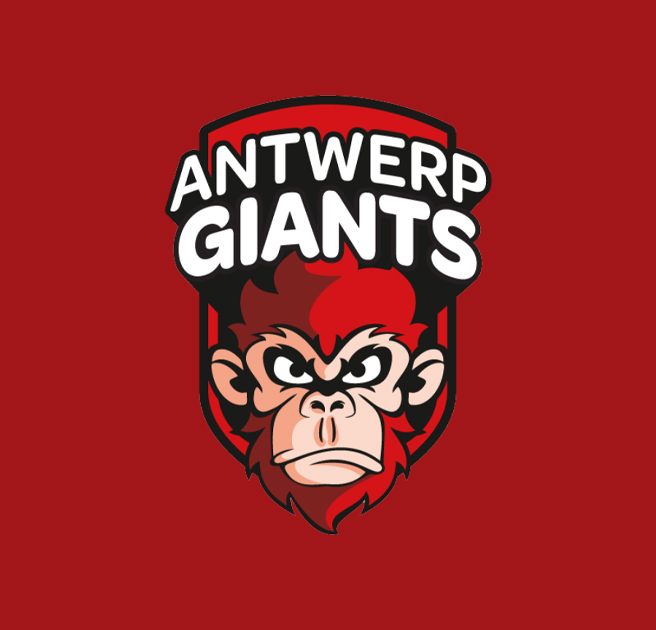
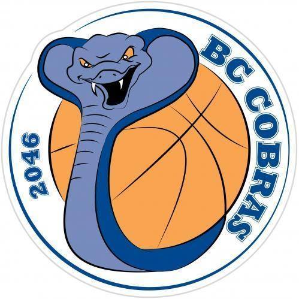
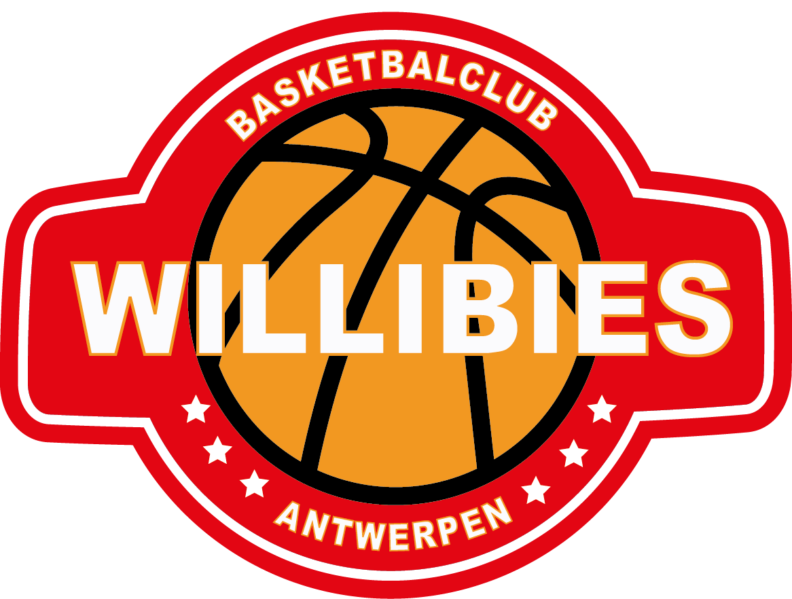
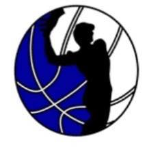
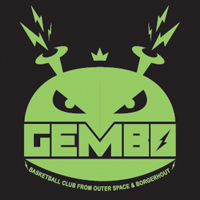
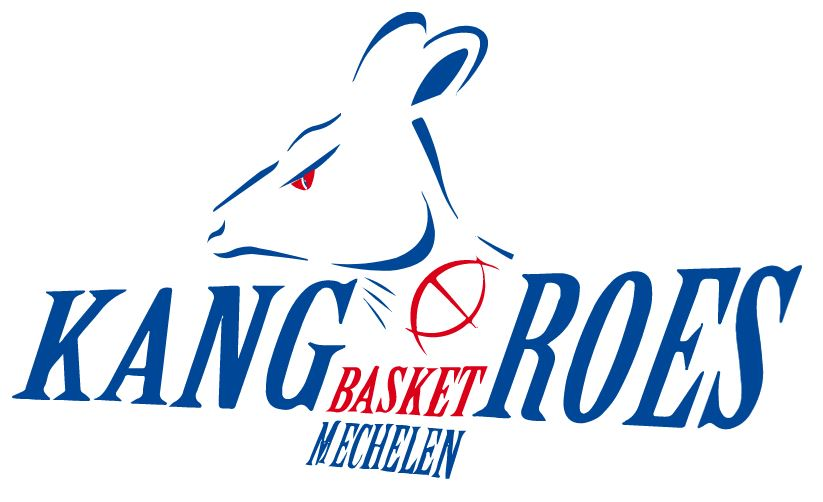
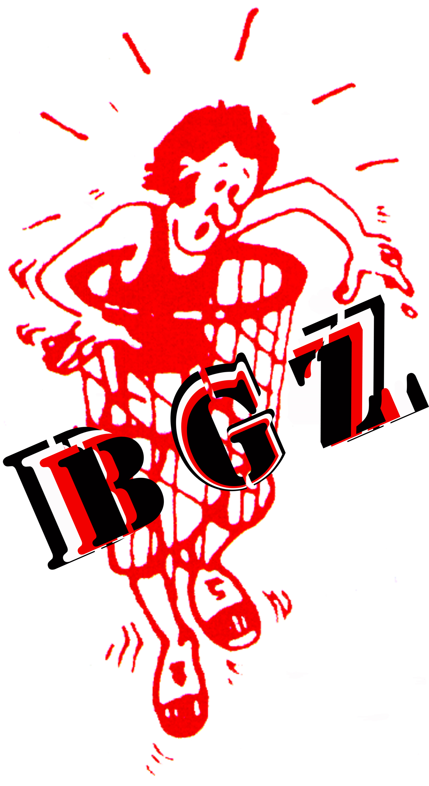
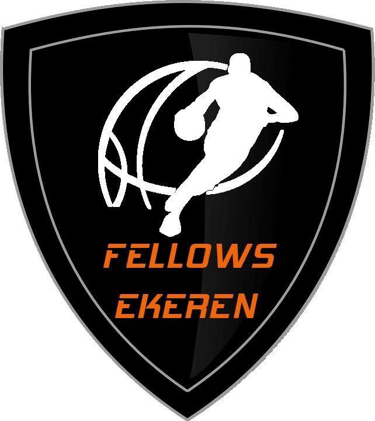

| Clubs in Antwerpen | Geschiedenis | Belangrijke overwinningen |
|---|---|---|
| Antwerpen Giants  | De Antwerp Giants zijn een Belgische professionele basketbalclub uit Antwerpen. De club werd opgericht in 1960 en speelt sinds 1981 in de Pro Basketball League, de hoogste basketbalcompetitie van België. De Giants zijn een van de meest succesvolle basketbalclubs in België. Ze hebben 11 keer het Belgisch kampioenschap gewonnen, 10 keer de Belgische beker en 1 keer de EuroCup Challenge. | Belgisch kampioenschap (14): 1965, 1966, 1967, 1969, 1970, 1971, 1972, 1973, 1974, 1975, 1976, 1977, 1978, 2023 |
| BC Cobras Schoten-Brasschaat  | BC Cobras is een Belgische basketbalclub uit Schoten en Brasschaat. De club werd opgericht in 1964 en speelt sinds 1982 in de tweede klasse van het Belgisch basketbal. In de afgelopen jaren heeft BC Cobras zich ontwikkeld tot een van de sterkste clubs in de tweede klasse. De club eindigde in 2018, 2019 en 2020 op de tweede plaats. In 2022 won BC Cobras voor het eerst in de clubgeschiedenis het kampioenschap van de tweede klasse. | Belgisch kampioenschap (3): 1988, 1989, 1994 |
| Willibies Antwerpen  | Willibies Antwerpen is een Belgische basketbalclub uit Willebroek, een stad in de provincie Antwerpen. De club werd opgericht in 1972 en speelt sinds 2022 in de tweede klasse van het Belgisch basketbal. In 2022 promoveerde Willibies Antwerpen voor het eerst in de clubgeschiedenis naar de tweede klasse. De club eindigde op de vijfde plaats in de reguliere competitie en verloor in de play-offs van BBC Okapi Aalst. | Beker van België (1): 1979 |
| Nieuw Bravo  | Nieuw Bravo is een Belgische basketbalclub uit Antwerpen. De club werd opgericht in 2023 als een fusie tussen BBC Kangoeroes Basketbal Antwerpen en BBC Okapi Aalst. De fusie tussen BBC Kangoeroes Basketbal Antwerpen en BBC Okapi Aalst werd a angekondigd in 2022. De twee clubs waren beide actief in de tweede klasse van het Belgisch basketbal. BBC Kangoeroes Basketbal Antwerpen was een van de meest succesvolle clubs in de tweede klasse, met meerdere titels en bekers op haar naam. BBC Okapi Aalst was een jongere club, maar had in de afgelopen jaren een sterke ontwikkeling doorgemaakt. | Belgisch kampioenschap (1): 1956 |
| Mercurius BBC Berchem |
Mercurius BBC Berchem is een gerenommeerde basketbalclub uit Berchem, Antwerpen, België. De club werd opgericht in 1941 en vertegenwoordigt de regio al meer dan tachtig jaar met trots, en heeft zich gevestigd als een steunpilaar van het Belgische basketbal. De impact van Mercurius BBC Berchem reikt verder dan het basketbalveld. De club is een steunpilaar van de Berchemse gemeenschap, die een passie voor de sport koestert en kameraadschap bevordert onder spelers, fans en supporters. | Belgisch kampioenschap (2): 1954, 1955 |
| Rucon Gembo Koninklijke basketbalclub Borgerhout  | Rucon Gembo Koninklijke basketbalclub Borgerhout is een Belgische basketbalclub uit Borgerhout, een district van Antwerpen. De club werd opgericht in 1932 en is daarmee een van de oudste basketbalclubs van België. De gouden eeuw van de club begon in de jaren 80. In 1982 promoveerde de club naar de hoogste klasse van het Belgische basketbal, de Eerste klasse. In de jaren 80 en 90 was de club een van de topclubs van België. De club won in deze periode twee keer het Belgisch kampioenschap, in 1985 en 1990, en twee keer de Beker van België, in 1985 en 1990. | Belgisch kampioenschap (2): 1985, 1990 en Beker van België (1): 2022 |
| Kangoeroes Basket Mechelen  | De club speelde in de eerste jaren van haar bestaan in de tweede klasse van het Belgisch basketbal. In 2013 promoveerde de club naar de hoogste klasse, de Ethias League. Kangoeroes Basket Mechelen is een ambitieuze club die wil meedoen om de prijzen in de hoogste klasse. De club heeft een sterke jeugdopleiding en wil jong talent klaarstomen voor het eerste elftal. | Belgisch kampioenschap (2): 2021, 2022 en Beker van België (2): 2012, 2014 |
| Basket Groot Zemst  | Basket Groot Zemst is een Belgische basketbalclub uit Zemst, een gemeente in de provincie Antwerpen. De club werd opgericht in 2009, als een fusie tussen de clubs Avanti Zemst en Jeppe Eppegem. Basket Groot Zemst is een ambitieuze club die wil meedoen om de prijzen in de tweede klasse. De club heeft een sterke jeugdopleiding en wil jong talent klaarstomen voor het eerste elftal. | Promotie naar de derde klasse (2020) en Promotie naar de tweede klasse (2022) |
| Fellows Legal Brokers Ekeren BBC  | Fellows Legal Brokers Ekeren BBC is een Belgische basketbalclub uit Ekeren, een district van Antwerpen. De club werd opgericht in 2018.Het logo van Fellows Legal Brokers Ekeren BBC bestaat uit een schild met daarop een afbeelding van een basketbal. In het midden van het schild staat de t++ekst "Fellows Legal Brokers Ekeren BBC". Het logo is in de kleuren blauw en wit. Fellows Legal Brokers Ekeren BBC is een ambitieuze club die wil meedoen om de prijzen in de tweede klasse. De club heeft een sterke jeugdopleiding en wil jong talent klaarstomen voor het eerste elftal. | Beker van België (1): 1992 |
| Olicsa Antwerpen | Olicsa Antwerpen is een Belgische basketbalclub uit Antwerpen. De club werd opgericht in 1962 en is daarmee een van de oudste basketbalclubs van de stad. Olicsa Antwerpen is een ambitieuze club die wil meedoen om de prijzen in de hoogste klasse. De club heeft een sterke jeugdopleiding en wil jong talent klaarstomen voor het eerste elftal. | Beker van België (1): 1992 |